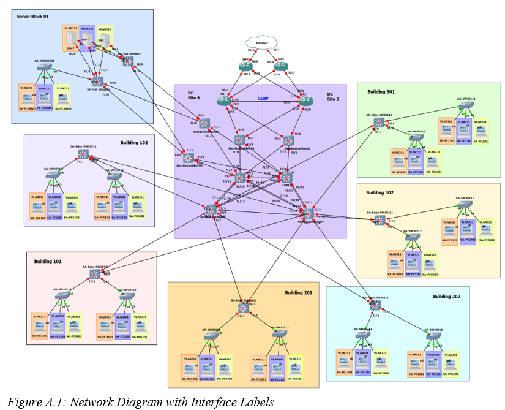

Overview
The design connected six client buildings, a centralized data center and dual ISP edge routers. The architecture combined EIGRP, OSPF, route redistribution, GLBP, VLSM, VLAN/client networks, DHCP, DNS, NTP and Tailscale peer-to-peer VPN connectivity.

Problem / Challenge
The project required a structured enterprise network with multiple routing domains, address segments, redundant gateways and a collaborative remote lab environment. The design therefore had to balance addressing efficiency, routing interaction, availability and practical team access.
My Role & Responsibilities
- Led the network engineering work and architecture implementation.
- Designed the VLSM addressing plan across the network segments.
- Implemented and tested EIGRP, OSPF and route redistribution.
- Implemented GLBP for gateway high availability and load balancing.
- Configured client network services including DHCP, DNS and NTP.
- Built the remote multi-user GNS3 environment using Tailscale to support team collaboration despite local network restrictions.
Approach / Process
Technologies & Skills
Challenges & Troubleshooting
Multi-protocol routing
Using EIGRP and OSPF in different portions of the architecture required route redistribution so that the separate routing domains could exchange reachability information.
High availability
GLBP was used to provide active/active gateway load balancing and failover, making availability a design property rather than a single-device dependency.
Remote collaboration
Tailscale peer-to-peer VPN connectivity was used to enable a multi-user GNS3 environment despite local network restrictions.
The LAN project evidence can be opened from the supporting PDF when it is present in the deployed assets.
Open LAN evidence PDF →Results / Outcome
The design connected six client buildings + centralized data center + dual ISP edge routers, with 39 subnets and 39 DHCP pools. Routing, high availability, addressing, infrastructure services and remote collaboration were incorporated into one enterprise-style lab.
Key Findings
What I Learned
I strengthened enterprise network architecture, VLSM planning, routing-protocol interaction, redundancy design, troubleshooting and remote infrastructure collaboration skills.
Key Takeaway
This project matters to my cybersecurity career because SOC and network-security work depends on understanding the architecture underneath the alerts: routing, segmentation, addressing, redundancy and infrastructure dependencies.